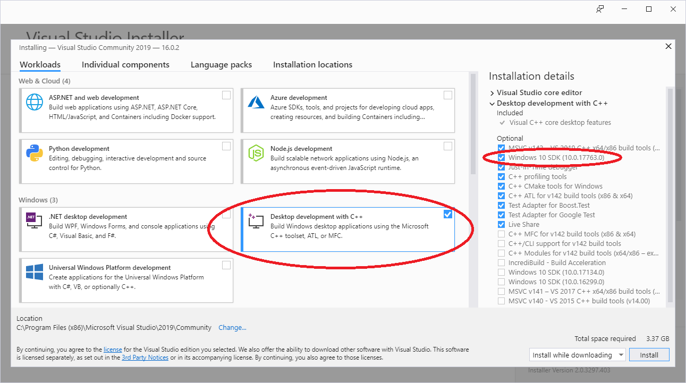
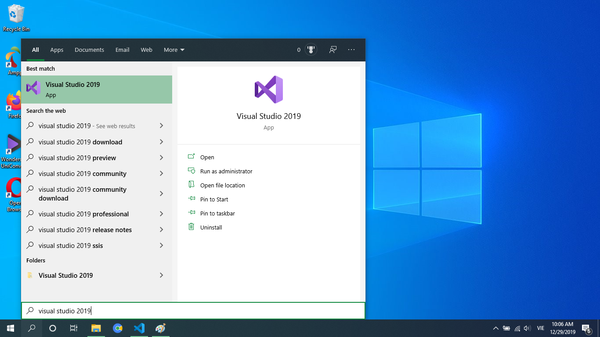
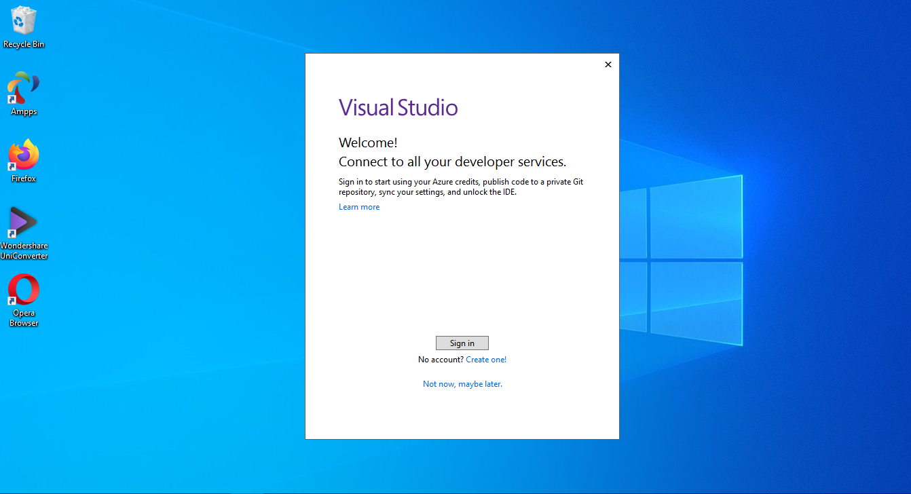
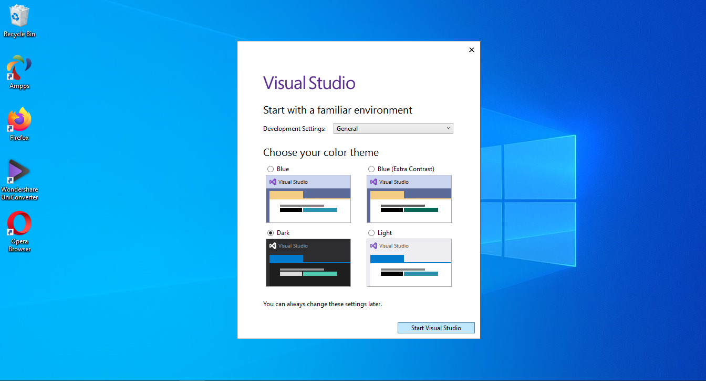

Integrated Development Environment (IDE) là một phần mềm chuyên dụng phục vụ cho công việc viết, chỉnh sửa code, biên dịch, liên kết và debug chương trình.
Một IDE đơn giản sẽ có tính năng đánh số dòng và highlight code. Phần lớn (không phải tất cả) IDE đều có một C++ compiler và một linker, tức là bạn có thể biến đổi source code thành một executable file bằng IDE. IDE cũng hỗ trợ các công cụ để debug code. Một IDE còn có các tính năng hỗ trợ viết code khác như auto format, gợi ý từ, tạo form sẵn,...
Ô kê, bắt đầu tải nào. Thế nhưng tải cái nào bây giờ? Hiện này có rất nhiều IDE hỗ trợ C++, có phí hoặc không có phí. Tất nhiên ta sẽ tải cái không có phí rồi nhỉ =)) Và tại đây, mình sẽ hướng dẫn các bạn tải và cài đặt Visual Studio 2019 Community cho Window. Các hệ điều hành khác mình không rành nên bạn thông cảm. Đối với MacOS các bạn có thể tải Xcode hoặc Eclipse. Eclipse thì không mặc định hỗ trợ C++ nên bạn phải tải thêm option dành cho C++. Đối với Linux, các bạn có thể tải Code::Blocks. Có một phần mềm khác có thể chạy trên cả 3 hệ điều hành trên là Visual Studio Code. Tuy nhiên, mình sẽ không khuyến khích các bạn dùng nó nếu các bạn mới học lập trình. Thứ nhất nó không phải IDE đúng nghĩa mà là text editor, do đó nó thiếu vài công cụ cần thiết cho việc phát triển chương trình. Thứ hai, việc cài đặt và sử dụng nó khá rắc rối nếu bạn là newbie. Có thể trong tương lại sẽ có bài viết hướng dẫn cài đặt và dùng nó, nhưng hiện tại mình không khuyến khích.
Nói nhiều nãy giờ rồi, ta bắt đầu vào việc chính. Đầu tiên, bạn cần tải Visual Studio tại đây. Các bạn click vào nút Free download ở phần Community, đừng click mấy cái khác nhé, mấy cái đó có phí đấy. Sau khi click bạn đợi vài giây nó sẽ tự động tải về một file đuôi .exe.
Sau khi tải xong các bạn click hai lần vào file đó để cài đặt. Nếu nó hiện một cái bảng thì nhấn Continue và đợi nó download các tập tin về. Sau khi nó tải và cài đặt xong thì sẽ xuất hiện bảng sau, các bạn click vào ô Desktop development with C++. Ở bên phải sẽ xuất hiện một danh sách, mặc định nó sẽ tích ô giúp bạn. Tuy nhiên, bạn cần đảm bảo rằng ô Windows 10 SDK phải được chọn nhé. Windows 10 SDK có thể chạy trên các phiên bản Window cũ hơn nên nếu bạn dùng Window 7 hay 8 đều không sao cả.
Tiếp theo bạn click Install và ngồi uống vài tách cà phê chờ nó tải bộ C++ về, khá nặng đấy.
Sau khi xong, nó sẽ hiện bảng cài đặt thành công, bạn nhấn vào nút Launch. Hoặc nếu bạn lỡ tắt cửa sổ thì bạn vào công cụ tìm kiếm của Window gõ visual studio 2019 để chạy ứng dụng.
Nếu bạn lần đầu vào Visual Studio thì nó sẽ hiện bảng đăng nhập, bạn thích thì có thể tạo tài khoản rồi đăng nhập vào, còn không thì có thể chọn Not now, maybe later.
Tiếp theo nó hiện bảng chọn theme, mình khuyến khích chọn dark theme vì đỡ đau mắt và ... nhìn nó ngầu 😎
Nhấn Start Visual Studio và bạn đã có thể viết chương trình C++.